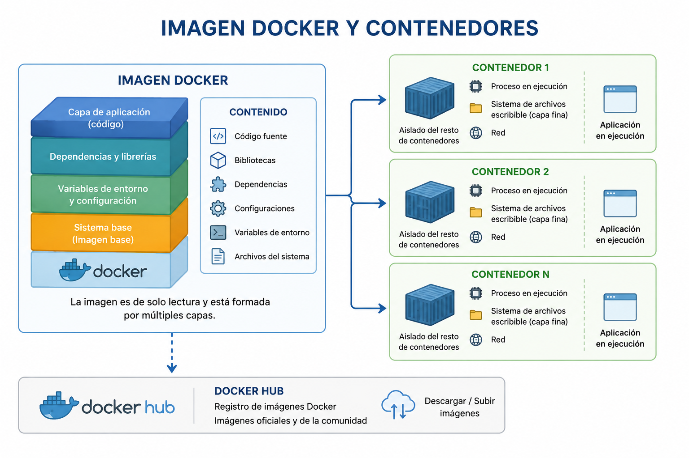
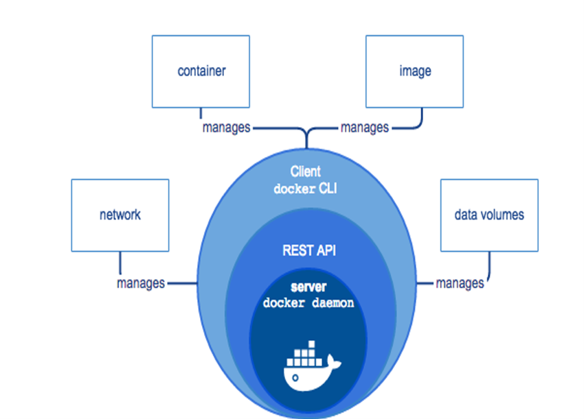

Capítulo 2. Estado del arte
Máquina virtual
Máquina virtual
Docker es una plataforma de código abierto que permite crear, distribuir y ejecutar aplicaciones dentro de contenedores de forma rápida, portable y eficiente. Desde su aparición, Docker ha revolucionado el despliegue de aplicaciones al facilitar la creación de entornos reproducibles y ligeros, reduciendo considerablemente el tiempo de instalación y configuración.
Una imagen Docker es un paquete ejecutable de solo lectura formado por varias capas que contiene todo lo necesario para ejecutar una aplicación.

Figura 7. Relación entre una imagen Docker y los contenedores generados.
Las imágenes Docker se construyen normalmente mediante un archivo denominado Dockerfile, donde se describen todos los pasos necesarios para construir la imagen.
FROM ubuntu:24.04
RUN apt-get update
RUN apt-get install -y python3
COPY app.py /app
CMD ["python3","/app/app.py"]
Una vez construida la imagen, ésta puede reutilizarse tantas veces como sea necesario para crear nuevos contenedores.
Docker Hub es el repositorio oficial donde la comunidad publica imágenes listas para utilizar. Desde Docker Hub pueden descargarse imágenes oficiales de:
Docker implementa una arquitectura cliente-servidor donde el cliente se comunica con el servidor Docker mediante una API REST para gestionar todo el ciclo de vida de los contenedores.

Figura 8. Arquitectura cliente-servidor de Docker.
Representado por el proceso dockerd, administra imágenes, contenedores, redes y volúmenes.
Permite la comunicación entre el cliente y el servidor Docker, gestionando todas las operaciones disponibles.
Representado por el comando docker, utilizado para crear, ejecutar y administrar imágenes y contenedores.
Los Docker Registry son repositorios públicos o privados donde se almacenan las imágenes Docker. Los registros permiten compartir imágenes entre desarrolladores y automatizar el despliegue de aplicaciones.
| Registro | Descripción |
|---|---|
| Docker Hub | Registro oficial de Docker. |
| GitHub Container Registry | Registro integrado con GitHub. |
| Harbor | Registro privado empresarial. |
| Azure Container Registry | Registro de Microsoft Azure. |
Docker constituye actualmente una de las tecnologías más utilizadas para el despliegue de aplicaciones distribuidas. Su modelo basado en imágenes, junto con su arquitectura cliente-servidor y la utilización de registros de imágenes, facilita la creación de infraestructuras reproducibles, escalables y fácilmente mantenibles. Estas características convierten a Docker en la plataforma idónea para desplegar el clúster Hadoop utilizado durante el desarrollo de este Proyecto Fin de Grado.